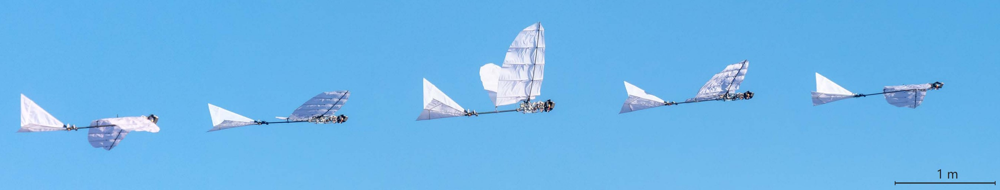
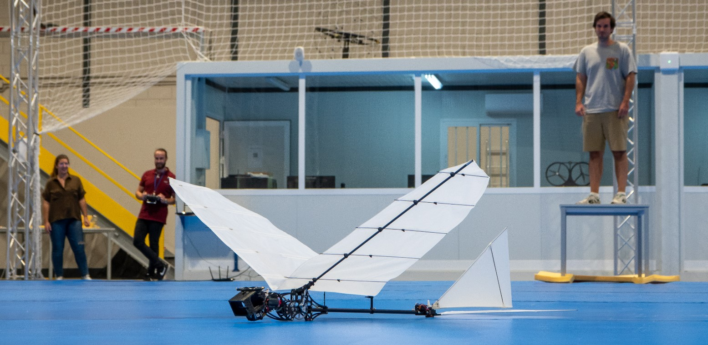
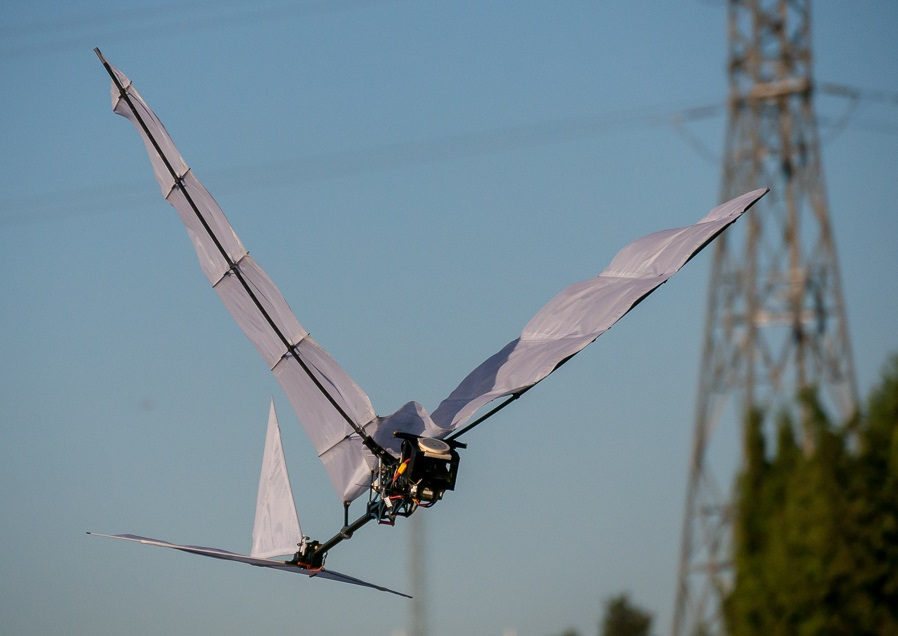
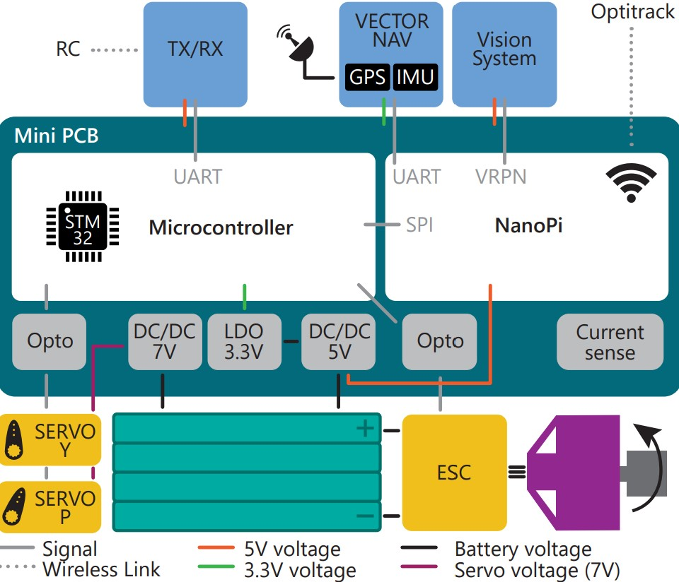

Large flapping-wing robots for physical interaction
What the project is about
Autonomous lightweight flapping-wing robots show potential to become a safe and affordable solution for rapidly deploying robots around humans and in complex environments. The absence of propellers makes such vehicles more resistant to physical contact, permitting flight in cluttered environments, and collaborating with humans. Importantly, the provision of thousands of species of birds that have already mastered the challenging task of flapping flight is a rich source of solutions. However, small wing flapping technology is still in its beginnings, with limited levels of autonomy and physical interaction capability with the environment. One significant limitation to this is the low payload available. Here we show the Eagleinspired Flapping-wing robot E-Flap, a 510g novel design capable of a 100% of payload, exceeding the requirement of the computing and sensing package needed to fly with a high degree of autonomy. The concept is extensively characterized, both in a tracked indoor space and in outdoor conditions. We demonstrate flight path angle of up to 50deg and velocities from as low as 2 m/s to over 6m/s. Overall, the robotic platform has been proven to be reliable, having performed over 100 flights. Through mechanical and electronics advances, the EFlap is a robust vehicle prototype and paves the way towards flapping wing robots becoming a practical fully autonomous flying solution.

Composite image of the E-Flap along a flapping cycle during outdoor flight.
Highlights video
Soon available
In revision, 2022
How can ornithopters perch on a branch?
PublicationRobotics and Automation Letters / ICRA 2021
Design of the high-payload E-Flap robot
PublicationIROS 2021
Tail design comparison for flapping-wing robots
PublicationSelected Media


